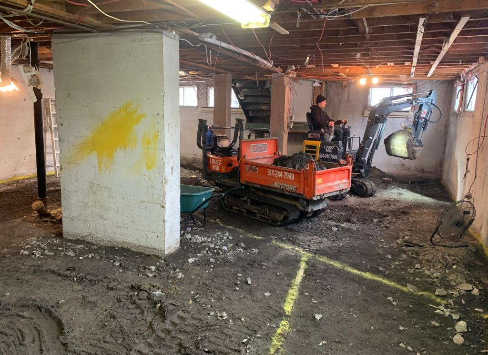
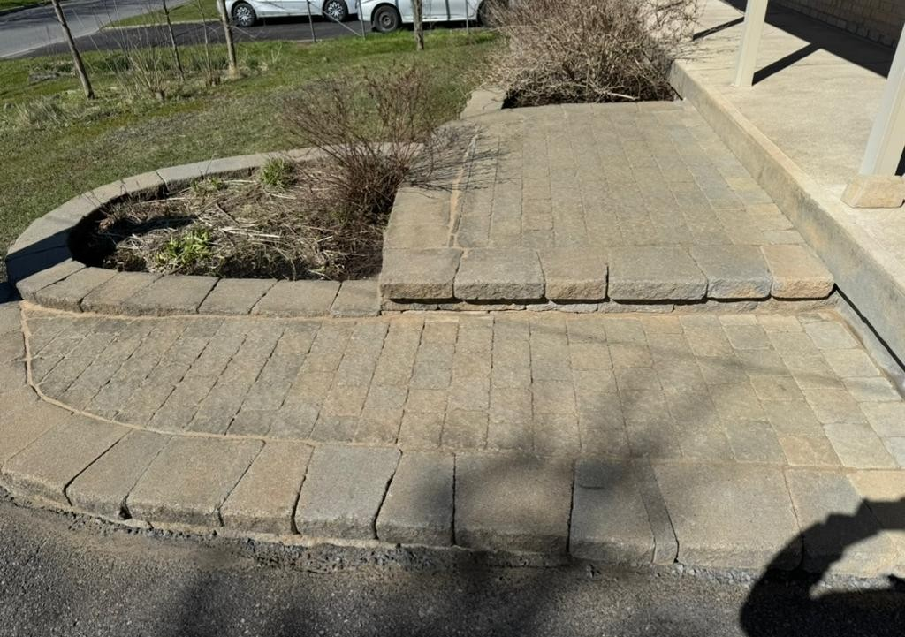

Nos Services
Nos services spécialisés
- Excavation/nivellation
- Pavé-uni/murets
- Pose de tourbe


Excavation/nivellation
- -Nivellement de terrain
- -Creusage de stationnement
- -Creusage pour cabanon
- -Drain de gouttière
- -Enlèvement d'asphalte et béton
- -Préparation pour asphalte
- -Location de pelle mécanique avec opérateur
- -Ramassage de matériaux
- Beaucoup plus encore contactez nous pour une soumission gratuite de votre projet!

Pavé-uni/murets
- -Désinstallation du pavé
- -Mise à niveau du pavé
- -Ajout de poussière de roche
- -Plaque vibrante
- -Ajout de sable polymère
- -Pose de Pavé-uni
- -Scellant à pavé
- -Remise à neuf de pavé

Pose de tourbe
- -Préparation du sol : désherbage, nivellement, et amendement du sol au besoin (terre, compost)
- -Compactage léger pour assurer une surface plane et ferme
- -Livraison et installation de la tourbe fraîche (gazon en plaques)